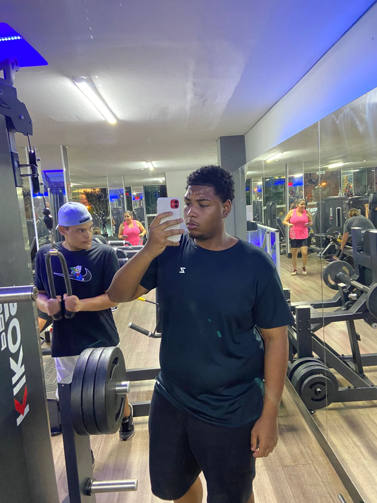

♡
💬
⤴
2.589 curtidas
Rodrigo
Olá, meu nome é Rodrigo, tenho 17 anos e estudo no CEM 12. Gosto muito de animais; tenho três cadelas. A mais velha tem 17 anos, se chama Bambi e a raça dela é vira-lata. Tenho outra que se chama Julie, ela tem 5 anos e a raça dela é Lhasa Apso. A mais nova é a Jade, ela tem 2 anos e a raça dela é mestiça.
Meu hobby é jogar; meu jogo favorito é o eFootball. Entrei na academia faz 3 meses e ela está me ajudando muito na minha saúde e na minha autoestima. Fazia um ano e meio que eu não me sentia bem e, graças à academia, eu já começo a ver mudanças no meu corpo e na minha mente. Eu era muito estressado e muito ansioso, e ela me ajudou bastante nesses pontos e em outros.
#exemplo #projeto #site #instagram
12 de Novembro de 2025